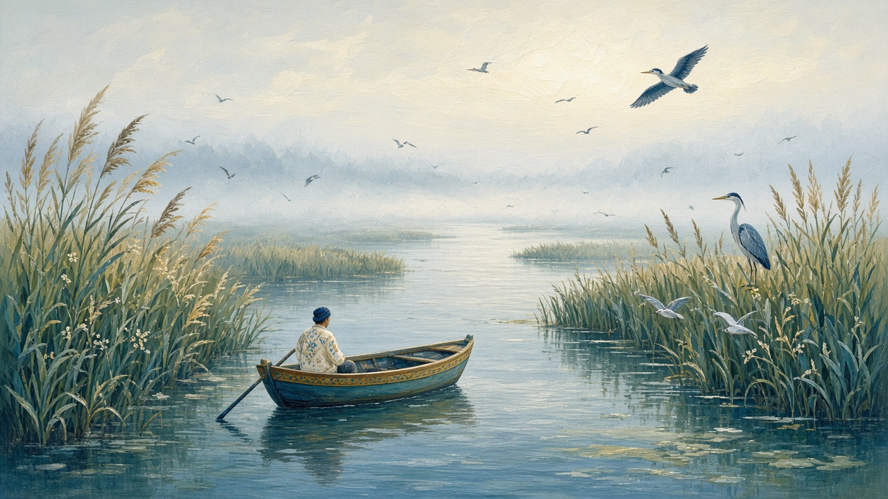

The delta
Delta Dunării. Not the barge river. The last branching before the Black Sea — reeds, channels, a house with one foot in the water.


The last branching
The Danube holds the south of the country for a long stretch, then it stops being one river. It splits. Arms, canals, lakes that look like land until you try to walk them. People say Delta Dunării when they mean that maze, not the industrial water that passes Galați, not the tourist stretch near the Iron Gates. Those are still Dunărea. This is the place where the river becomes a country of its own: stuf, the reed, higher than a person; a boat that is the road; willows standing in water. The rivers page keeps the names of the water that cuts the rest of the country. This page is only the fan at the end.
Living on the water
A lot of yards here are not yards. The house sits on stilts, or on a bank that floods, and the fence is a plank walk. You go by boat — slow, because the channel is the street, and there is no hurry a motor can fix if the water is low. Fishing is still work, not a postcard: nets, a catch that goes to a pot the same day, ice if you can get it. Stuf is cut for roofs, fences, mats, a little cash. In some villages the old fishing houses belong to Lipovan families — Old Believers who came here generations ago and stayed because the water paid. This is not a census. It is the ordinary fact of a place where the boat is how you fetch bread. The villages page still uses the word sat; in the Delta the sat sits on water.
Birds, and the quiet
What visitors come to see, and what you cannot help seeing, are birds. Pelicans, pelicani, heavy on the air. A heron still as a stake. The reeds hold the rest, and the country has decided this is a place to leave mostly alone — a reservation, a park, a set of rules about engines and nets that people argue with and also live under. The animals of the whole country sit on wildlife. This page only needs the feel: a channel that goes quiet after a bend, a sandbar with birds on it, the sense that the land is mostly water pretending. You do not list them. You wait, and they are already there.
Tulcea, then salt
Tulcea is the gate. That is where the road mostly ends and the water starts to matter. People buy a ticket, sit on a boat, and call it a day in the Delta. Sulina is the town at the mouth: a straight canal, a cemetery of names from when this was an international port, and a street that still feels like the last street before salt. Living here is another calendar — winter when the channels empty of guests, summer when every hull seems hired. That is not la mare. La mare is Mamaia, a plajă, a week in a rented room — the sea. The Delta is reeds first, salt last. Where the water finally meets the Black Sea, the story can leave. Until then it is still the river, only lost in its own branches. The city at the open window is the short lesson on Constanța.
You do not need a list of channels. You need the habit of asking whether a story is standing on a barge river, in the reeds, or already at the mare — and if it is the reeds, whether it is a day from Tulcea or a house that waits for the boat.